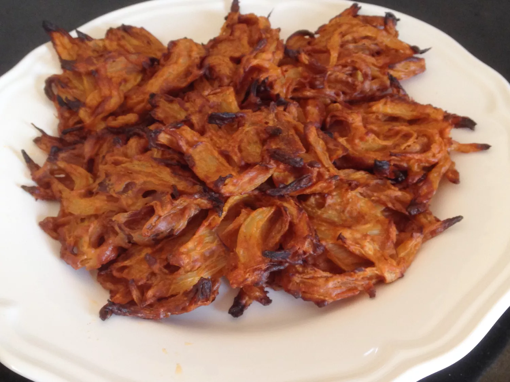

Onion Bhajji

Description
A healthier alternative to the deep-fried onion bhajis you find in Indian restaurants. These are baked and exceedingly tasty. They are sweet, tender and very Moorish. Serve hot as an appetizer or starter.
Ingredients
- 2 teaspoons extra-virgin olive oil, or as needed
- 5 small onions, thinly sliced
Spices for the pan
- 1/4 teaspoon chilli powder
- 1/2 teaspoon ground turmeric
- 1/2 teaspoon ground coriander
- 1/4 teaspoon ground cumin
- 1/4 teaspoon ground ginger
For the Bhajji Mix
- 5 tablespoons chickpea flour
- 1/2 teaspoon ground cumin
- 1/2 teaspoon ground coriander
- 1 pinch salt
- 1 tablespoon tomato puree
- 1 tablespoon water, or as needed
- 1 tablespoon extra-virgin olive oil, divided, or to taste
Steps
-
Preheat the oven to 400 degrees F (200 degrees C). Line a large baking sheet with parchment paper.
-
Heat 2 teaspoons oil in a skillet over medium heat. Add onions; cook and stir until translucent, 6 to 8 minutes. Sprinkle in chili powder and mix. Add turmeric, 1/2 teaspoon coriander, 1/4 teaspoon cumin, and 1/4 teaspoon ginger. Stir well and remove
from heat.
-
Combine chickpea flour, 1/2 teaspoon cumin, 1/2 teaspoon coriander, and salt in a bowl and mix well. Mix in the onions and tomato puree; add a little water until mixture is wet and easy to stir.
-
Drizzle 1 teaspoon olive oil onto the prepared baking sheet. Place 2 tablespoons of the onion mixture onto the baking sheet for each bhaji; flatten slightly with the back of a spoon.
-
Bake in the preheated oven for 20 to 25 minutes. Drizzle remaining oil over the bhajis and continue baking until golden brown, about 25 minutes.